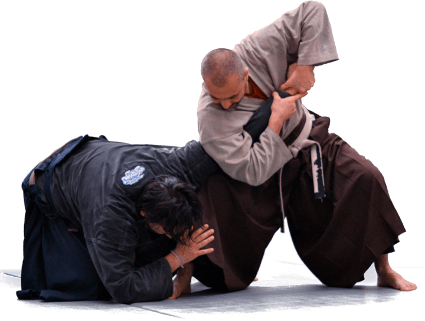

Si chiama Tenryuzanji, e lì puoi incontrare il venerabile Seiun, Monaco guerriero fondatore della scuola Sakushinkan.
Il Sakushinkan Budo è il metodo di addestramento alle Nio Shin Ryu Kempo, antica arte guerriera del Giappone, che include le discipline tradizionali di combattimento a mani nude e armato.